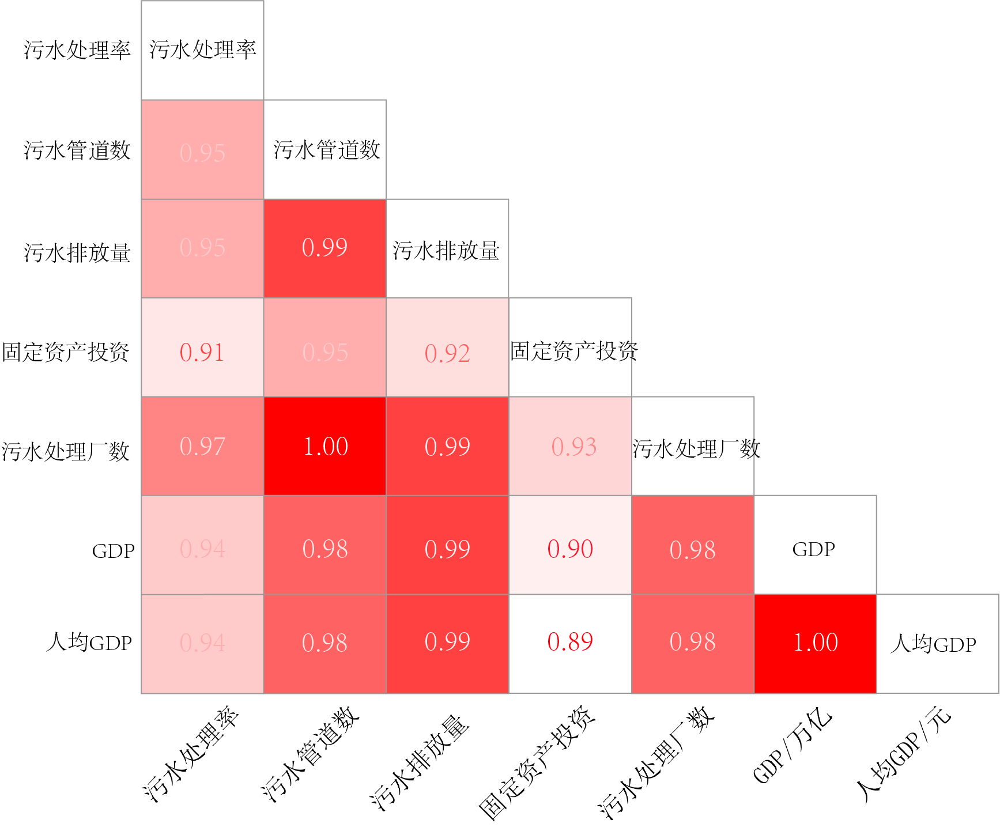

其余各省市排放量近十年来位于40000万立方米以下，呈稳定增长态势，其中西藏的排放量最低 ，但是也在2020年超过10000万立方米。全国的平均污水排放量逐年增长，在2021年突破200000万立方米。
各省份排放量情况与该区域经济发展水平、设施状况、人口数量、土地面积等因素紧紧相关，反应了各省份的城市发展水平和城建投入状况。
无论是生活污水还是工业废水，都需要经过处理达标后才能排放。家住湖南永州城区的市民肖先生深受污水问题的困扰：从2009年起，永州市城区的各种污水未经处理便被直排湘江，时常将半条江染得乌黑。湘江穿过城市，扮演着临近城市母亲河的角色，滋养着沿岸几十万人，未处理的污水排放威胁着居民的身体健康。但这不仅是永州市，全国各市的污水处理问题也亟需解决。据调查，我国有65.4%的人常年在饮用不符合饮用标准的水。其中大约有7 亿 人饮用大肠菌群超标的水，1.6亿人饮用含有有机污染物严重的水，3500万人饮用硝酸盐超标的水。据京、津、沪、渝等8城市的病因调查，水源污染使这些城市市区发病率比郊区高3倍以上。
广东省污水排放量位居首位，2021年超过900000万立方米，与第二位的江苏省拉开极大差距，差值逐渐增加，由2012年的226191万立方米增至2021年的408339万立方米。 山东省居于第三，而在2021年，浙江省超过山东省成为了污水排放量前三省份。从地理位置上看，排放量前三的省份均位于东部沿海地区，其经济发展水平较高，2021年广东、江苏、山东、浙江位列全国GDP前四位，广东省GDP为124369.67亿；江苏省以116364.2亿元位列第二；山东省、浙江省也分别突破80000亿与70000亿。经济发展的同时吸引了众多人口的涌入，相应地，这几个城市中常住人口数也在全国前列。
数据来源：中华人民共和国住房与城乡建设部统计年鉴
其余各省市排放量近十年来位于40000万立方米以下，呈稳定增长态势，其中西藏的排放量最低 ，但是也在2020年超过10000万立方米。全国的平均污水排放量逐年增长，在2021年突破200000万立方米。
各省份排放量情况与该区域经济发展水平、设施状况、人口数量、土地面积等因素紧紧相关，反应了各省份的城市发展水平和城建投入状况。
数据来源：中华人民共和国生态环境部
图2详细分析了2021年11月至2022年10月地表水水质类别比例变化，依据国家标准，I类水为源头水，II类和III类水适用于集中式生活饮用。 2021年10月至2022年7月，前三类水比重最低时仅有75.8%，与最高时相差13.4%，变化幅度大，其中占比最重的II类水变化幅度也最大，为8.2%。
污水排放不仅影响到水质，最重要的是影响生存环境和个人身体健康。城市生活污水处理自200年前工业革命以来，越来越受人们重视。城市污水处理率已成为一个地区文明与否的重要标志之一。近200年来，城市污水处理已从原始的自然处理、简单的一级处理发展到利用各种先进技术、深度处理污水，并回用。我国城市污水处理相对于发达国家，起步较晚，城市污水处理系统仍需改进和完善。
数据来源：中华人民共和国住房与城乡建设部
数据来源：中华人民共和国住房与城乡建设部
近十年来，全国污水处理率都呈现增长态势。 至2021年，除西藏外，各省污水处理率均超过95%。西藏的污水处理率虽落后全国平均水平，但变化最大，尤其是从2012年至2016年，由19.07%增至86.43%，增长倍数达353%。
另外青海、黑龙江位于倒数第二、倒数第三的位置，从经济状况方面来看，符合经济发展差异。值得关注的是，在2019年，湖北省污水处理率达到了100.26%，省内污水处理量超过了污水排放量。
通过计算2012-2021年污水处理率和污水管道数量、污水排放量、市政公共设施建设固定资产投资（污水）、污水处理厂数量、GDP、人均GDP的两两相关性，我们从基础设施建设、投入水平、经济发展水平三方面探究进一步提升污水处理率的可能性。
图5，污水处理影响因素分析图
数据来源：中华人民共和国住房与城乡建设部
（上图所标注的数据为对应因素的相关性，颜色越深，则表示相关性越强）
从上述数据来看，这些因素均与污水处理率高度相关，其中 污水处理厂数量在其中的相关性最高，达到了97%；另一也属于基础设施建设部分的污水管道数量因素排第二，相关性达95% 。可见基础设施建设在污水处理中的重要性。
另一值得注意的方面是:市政公用设施建设固定资产投资（污水）与其他因素的相关性均是最低 ，我们推测产生这一现象的原因是现阶段污水处理率达到了较高水平，城市市政污水处理的公用设施建设普遍较为完善；另外，投资与成效之间存在一定的滞后现象，因此，公用设施建设的投资对污水处理率的直接影响力不及其他因素。
2020年德国拥有城镇污水处理厂 9105座，服务当量人口总规模为1.518亿，接近德国实际人口（8200万）的2倍。 2020年德国水协调查了其中的5220座，调查总规模为1.308亿当量人口，占总规模的86.2%。
从图6中不难发现，级别越高的污水处理厂相应的规模范围也越大，而越高级别的污水处理厂对应的服务人口也越多，资源配置较为合理。
数据来源：德国水协DWA专业刊物
合流制是用同一个管渠系统收集和输送污废水的排水方式，分流制则是用不同管渠分类收集和输送污废水的排水方式。从控
制和防止水体的污染来看，合流制效果较好，还增加了污水厂容量；当然，建设费用也随之增高。采用分流制，雨天有部分
混合污水通过溢流井溢出，直接排入水体，成为水体污染源，使水体遭受污染。
图7，德国排水体制分布图
（图中数字是该地区合流制占比）
数据来源：德国水协DWA专业刊物
图7中数字是该地区合流制管道数量占比，以萨尔州最高达92.1%；以勃兰登堡州最低为3.9%。东西向横线是被称为“排水体
制赤道线”，该线在逐步向北移动，说明原东德地区在排水系统建设和改造中更多采用了分流制。
需要说明的是德国污水处理厂平均负荷率不足80%，年污水处理量是包括雨水和其它外来水量的，不是实际的污水产生量，
所以合流制地区人均污水处理量明显高于分流制地区。
1.德国污水处理厂规模衡量科学。德国污水处理厂规模是按照服务人口（当量人口）来衡量的，其有效解决了排水体制不同，处理水量不同，但是（当量）人口污染负荷相同的问题。所以，其单位耗电量、单位污泥产量等都是按照单位人口来衡量和比较的。
2.德国以分流制为主的北部和东北部地区的污水处理厂污染物进水浓度几乎比合流制为主的地区高1倍。我国只有低地下水位地区和排水管网较好的城市，其进水浓度才基本上与德国合流制地区接近。
Copyright © 2020.Company name All rights reserved.